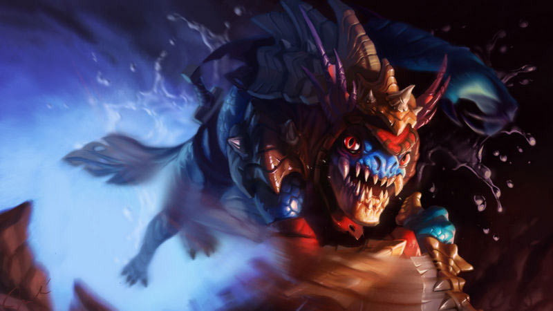
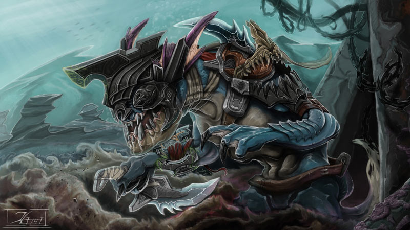
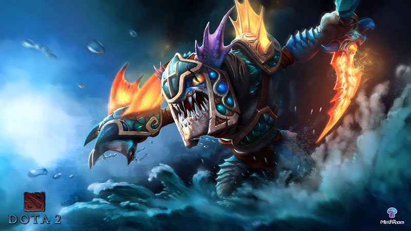

Dota 2 Lore

Slark, Buronan Berbahaya penjara Dark Reef
Sept 14, 2017 views : 3,487,489 Slark merupakan buronan dari penjara paling buruk, Dark Reef. Ia juga merupakan satu-satunya orang yang berhasil lolos dari penjara tersebut. Bagaimana cara ia meloloskan diri? Yuk simak cerita hero Dota 2 Slark berikut ini. Entah di dunia nyata, di galaksi lain, di dunia sesudah kehidupan, di daratan maupun di lautan. Semuanya memiliki peraturan yang harus dipatuhi. Siapapun yang melanggar peraturan tersebut akan dikenakan hukuman. Pelanggaran ringan terkadang hanya akan diganjar hukuman sosial atau denda. Tapi masalah serius bisa berujung ke penjara. Di dunia fantasi seperti semesta Dota 2, beberapa kejahatan tak hanya berujung penjara saja. Para narapidana akan disiksa atas apa yang telah mereka langgar.

Di antara seluruh penjara yang ada, hanya Dark Reef yang sangat dikenal sebagai penjara terhebat yang pernah ada. Semua penjahat terburuk yang ada di dunia ini berada di sana. Penjara tersebut dipenuhi oleh makhluk-makhluk aneh dan mengerikan, mulai dari Slithereen pembunuh, pengkhianat Deep Ones, serta para Meranth sosiopat. Salah satu makhluk yang berada di penjara tersebut adalah Slark. Ia berhasil bertahan hidup di Dark Reef selama masa hidupnya. Ini merupakan pencapaian yang sangat luar biasa karena Dark Reef sangat terkenal akan kekejamannya. Bahkan penjahat yang hebat sekalipun akan mati hanya dalam kurun satu minggu hingga satu tahun saja.
Rahasia dari pencapaian Slark dalam bertahan hidup di Dark Reef tidak lepas dari kekejaman dan kelicikan miliknya. Slark sangatlah hebat dalam hal menyelinap. Ia juga sangat hebat dalam bunuh-membunuh. Ia bahkan telah memakan salah satu penghuni Dark Reef agar dapat bertahan hidup. Hingga sekarang belum diketahui secara pasti apa kejahatan yang telah dilakukan oleh Slark, tetapi satu hal yang pasti adalah ia adalah salah satu pengkhianat Deep Ones dan mengambil kontrak dengan Dark Ones. Kemampuan yang didapatkan dari Dark Ones itulah alasan mengapa ia sangat hebat dalam hal membunuh dan mengendap-endap.

Suatu hari kelompok rahasia Dark Reef Dozen merencanakan sesuatu agar dapat kabur dari Dark Reef. Karena tidak ingin rencana mereka diketahui oleh siapapun, mereka membunuh orang-orang yang tidak berhubungan dengan kelompoknya agar membuat rencana mereka tetap aman dan rahasia. Tetapi entah bagaimana caranya, Slark berhasil mengetahui rencana kabur kelompok mereka dan mengambil tempat dalam kelompok tersebut. Begitu saatnya kabur, Dark Reef Dozen pun menjalankan rencananya. Tetapi sayang pada saat mencoba menjalankan aksinya, mereka ketahuan oleh salah satu penjaga Dark Reef. Tidak tinggal diam saja, penjaga itu memanggil penjaga yang lain dan mengejar kawanan pelarian tersebut.
Sepuluh dari Dark Reef Dozen mati saat mencoba kabur dan dua orang tertangkap dan dibawa masuk kembali ke dalam Dark Reef. Sayangnya bukannya kembali dipenjara, kedua tahanan yang mencoba kabur tersebut disiksa dan menjadi barang hiburan untuk tahanan lainnya. Diperlakukan seperti itu, kedua anggota tersebut pun meninggal. Berbeda dengan anggota di kelompok tersebut, Slark berhasil melarikan diri dengan sangat mudah. Ia memanfaatkan kekacauan saat para penjaga mengejar tahanan yang mencoba kabur. Dengan begitu ia pun berhasil melarikan diri dari penjara. Hingga sekarang, statusnya masih buron.
 Tetapi ada mitos lain. Mitos ini menceritakan bahwa Slark berhasil lolos akibat kerusakan yang diakibatkan Monkey King, saat sang hero mencoba mengambil Jingu di bawah penjara Dark Reef. Dengan hancurnya penjara tersebut, Slark pun berhasil kabur dari Dark Reef. Hingga saat ini hanya Slark lah satu-satunya orang yang berhasil melarikan diri dari Dark Reef. Setelah melarikan diri dari penjara itu, Slark kini tinggal di pesisir pantai yang di sekelilingnya ada tumbuhan mangrove karnivora. Dengan kemampuan yang ia miliki, ia dengan mudah dapat bertahan hidup disitu dan menjadikan tempat tersebut sebagai tempat tinggalnya.